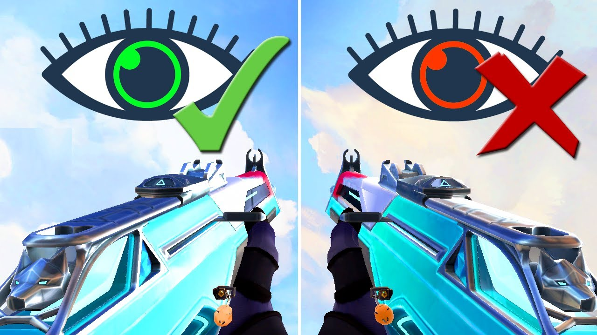

En ocasiones seguro que has visto a Streamers o jugadores de la escena competitiva de Valorant llevar el arma a la izquierda, esto ocurre porque en estas personas su ojo domínate es el izquierdo. Saber esto te puede ayudar a colocar el arma en el lado correcto para jugar mas cómodo, dado que tu ojo dominante es el que va a hacer el mayor trabajo. ¿Cómo puedo saber cual es mi ojo diamante? Muy sencillo vas a buscar un objeto en tu habitación, a poder se que este sobre una mesa, te vas a acercar lo máximo que puedas y luego te vas a alejar de el tres pasos. Posteriormente con los DOS ojos abiertos lo vas a señalar con un dedo, y luego vas a cerrar el ojo derecho para ver solo por el izquierdo, si tu dedo apunta al centro del objeto a la perfección significa que tu ojo domínate es el izquierdo y tienes que poner el arma a la derecha, luego, si cierras el ojo izquierdo para ver por el derecho lo más normal es que veas que dedo no estaba apuntando al objeto, si al cerrar el ojo izquierdo ves que el dedo apunta al medio del objeto quiere decir que tu ojo domine es el derecho y tienes que poner el arma a la derecha. Esto también va de gustos por que te puede ser muy molesto jugar con el arma en un sitio que no te es normal. Pero suele ser muy útil a muchas personas el saber en dónde colocar el arma para ser más eficaces en Valorant.
